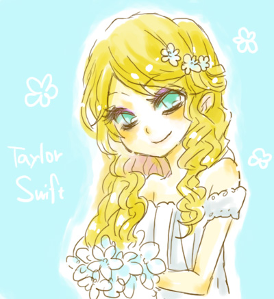
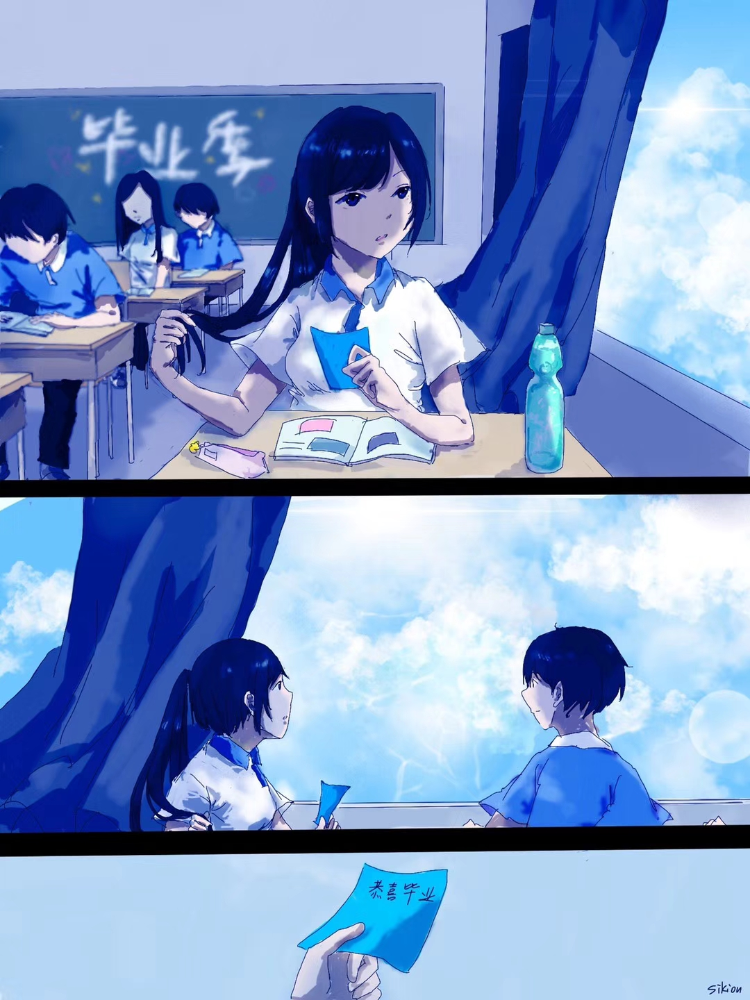

"喜欢你"
是我最想告诉你的话语

喜欢Taylor Swift?
在Love Story下浏览本页面?
右滑>>
错了?或许你可以听听我喜欢的
樱花抄
发自心底去想念一个人
是你令我第一次拥有如此感受
--One more time one more chance
一直以来没能说出的
在这个雨季表达出来
唯有星辰仿佛要坠落的夜晚
我欺骗不了
--One more time one more chance
暗恋,美好而无奈
在那么久之后,我才明白我心中真正想做的
难道总是失去后才明白
--One more time one more chance

直到现在,我才重新联系你
思念如缤纷落樱堆积 化作皑皑细雪
--Late in autumn
再一次的匿名表白
你对此的感受是什么?我无从得知
实际上我希望你能对此感到开心或激动
I know,I know I've let you down
--Komm,süsser Tod
我不知道究竟该做什么
虽然可能已经失败
但我仍然用自己所学为你制作了这个网站
In my dreams,I feel your light
--Take me hand
在未来
我仍然会喜欢你
我不希望我们真的再也无法相见
Not forget you.
--Open window
这个网站将会一直存在
只要知道网址都可以访问,这是一种见证
当你感到失落或受挫时
进来看一看,或许你能感受到温暖
I wish that I could turn back time
--Komm,süsser Tod
最后,还有一个充满爱心的小惊喜
点击一下?